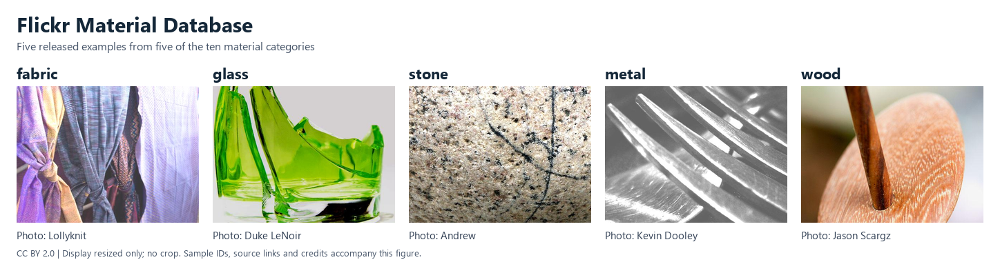

FMD


Fig. 2 Five released samples, resized without cropping and arranged for display. Source photographs and credits are listed under Teaser Credits.
Source and Scale
The Flickr Material Database (FMD) contains 1,000 photographs in ten material categories, with 100 photographs per category: 50 close-ups and 50 regular views. Each photograph has a region-of-interest mask. The released photo/mask pairs are 512 by 384 pixels.
The official ZIP
is 58,627,619 bytes. Photos use image/<class>/<filename>.jpg; their masks
have the same relative names below mask/. Metadata files are not samples.
The builder pins the archive SHA-256
254475ddb37bf0fe1383ff9ea61eb71042db33af1f9a9aa8747391a72135b8f8.
This fingerprint was computed from the downloaded release; it is not a
checksum published by the dataset authors.
Schema and Collection
FMD uses supervised_keys=("image", "label"). Each sample contains:
image: anImagefeature, returned as an RGB PIL image by default.label: aClassLabelinteger in the fixed orderfabric,foliage,glass,leather,metal,paper,plastic,stone,water,wood.image_id: the unique category-relative path<class>/<filename>.jpg.mask: anImagefeature, returned as an L or RGB PIL image with the same dimensions as its photograph.
FMD() and FMD(split=None) return a StableDatasetDict containing
only train. FMD(split="train") returns that StableDataset with
all 1,000 records. Here train names the complete collection; the archive
has no fixed official training, validation or test partition. Close-up versus
regular view does not define a partition. The builder does not resize or
normalize samples or assign experimental splits.
Mask Preservation
Released JPEG masks can be L or RGB, have nonbinary values, and have unequal RGB channels. The builder preserves each mask’s original decoded mode, dimensions and pixels as lossless PNG. It does not grayscale, threshold, merge channels, resize or encode masks as JPEG again. This preserves decoded pixels, rather than the original compressed JPEG bytes. Photographs are also stored as PNG after RGB decoding.
With with_format("numpy"), images are H x W x 3 uint8 arrays and masks are
H x W or H x W x 3 uint8 arrays. The torch formatter returns CHW float tensors
divided by 255. Mixed-mode masks therefore have different channel counts;
classification code should select only image and label before batching
and pass only images to the model.
Loading and Cache
The first load downloads the public archive and prepares the native cache. Use explicit cache locations when needed:
from stable_datasets.images import FMD
options = dict(
download_dir="/your/data/downloads",
processed_cache_dir="/your/data/processed",
)
collections = FMD(**options)
assert set(collections) == {"train"}
dataset = FMD(split="train", **options)
sample = dataset[0]
assert sample["image"].mode == "RGB"
assert sample["mask"].mode in {"L", "RGB"}
assert sample["image"].size == sample["mask"].size
Archive members are read without filesystem extraction. Missing or orphaned
masks, duplicate or unsafe member names, corrupt images, unsupported mask
modes and mismatched dimensions raise errors. Subsequent loads reuse the
processed cache. with_format("raw") exposes the encoded PNG bytes;
changing a formatter does not alter the cached annotations.
License and Citation
The source page lists Creative Commons terms, image credits and exceptions with different licenses. Consult the source gallery and original photograph attributions; the archive does not provide a per-image license mapping, and this contribution does not assert one uniform dataset license. The repository includes only the five reduced-size photograph previews credited below, not the dataset archive, full-resolution photographs or masks.